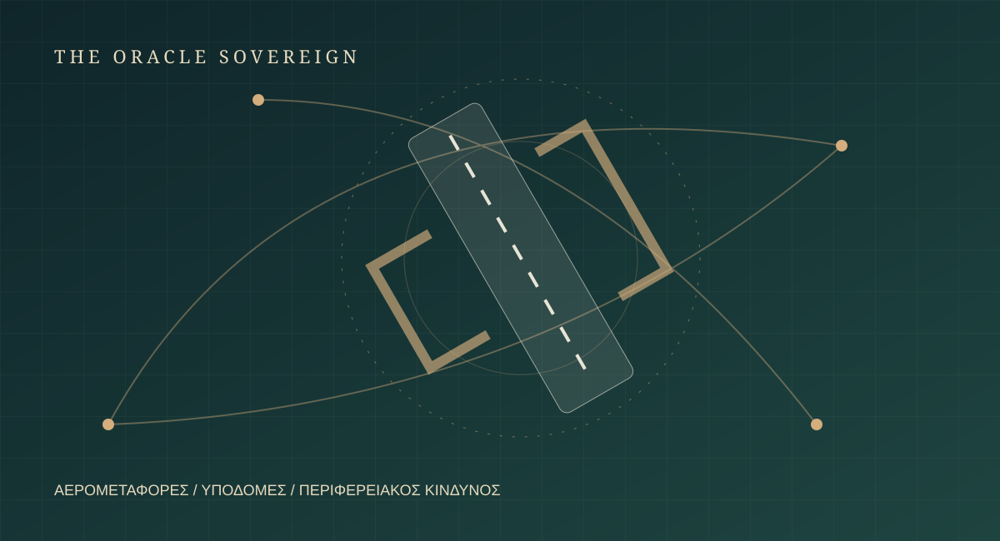

Πρώτο θέμα
Ριάντ: νέο πλήγμα στο αεροδρόμιο, μία ημέρα μετά τη φονική επίθεση [Εξέλιξη]
Σε σχέση με τη χθεσινή έκδοση, νέα επίθεση έπληξε την Κυριακή τον ίδιο επιβατικό τερματικό σταθμό του αεροδρομίου King Khalid στο Ριάντ. Οι Χούθι ανέλαβαν την ευθύνη, ενώ ο απολογισμός του προηγούμενου πλήγματος αυξήθηκε σε 13 νεκρούς μετά τον θάνατο Ινδού τραυματία. Η Σαουδική Αραβία ανέφερε επίσης επίθεση στο αεροδρόμιο του Νταμάμ. Ο Ντόναλντ Τραμπ εξετάζει αμερικανική συμμετοχή στη σύγκρουση. Η επανάληψη των χτυπημάτων μεταφέρει την προσοχή από ένα μεμονωμένο συμβάν στην ασφάλεια πολιτικών αερομεταφορών και στην αντοχή της περιφερειακής αεράμυνας.
1 εκδοτική πηγή · 1 γνωστή αλυσίδα αναφοράς
Διάβασε την ανάλυση ↗Associated Press ↗ · Πρακτορείο · Δημοσίευση: Χρόνος μη διαθέσιμος · Ανάκτηση: 12/10/2026 · 09:01 EEST